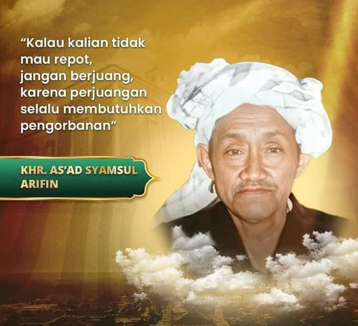

Ruang Aksi
Militansi yang sehat dibangun lewat kontribusi nyata—terencana, disiplin, dan bisa dievaluasi.

Ruang Aksi adalah peta jalur kontribusi kader IKSASS. Di sinilah semangat perjuangan diterjemahkan menjadi kerja yang tertib: hadir, membantu, menyelesaikan amanah, dan menjaga adab organisasi dalam setiap peran.
“Kalau kalian tidak mau repot, jangan berjuang, karena perjuangan selalu membutuhkan pengorbanan.”
— KHR. As'ad Syamsul Arifin
Pengorbanan dalam ruang aksi bukan sekadar perkara tenaga, tetapi juga kesediaan memberi waktu, perhatian, pikiran, dan disiplin untuk menguatkan struktur secara nyata dan berkelanjutan.
Apa itu Ruang Aksi?
Ruang Aksi membantu anggota memilih cara berkhidmah yang paling relevan dengan kapasitas, waktu, dan kebutuhan struktur. Militansi dipahami sebagai konsistensi: hadir, berkhidmah, menyelesaikan, dan menjaga adab organisasi.
Prinsip Khidmah
- Terukur: ada target dan luaran yang bisa dicek.
- Berjenjang: mulai dari kontribusi kecil yang stabil, lalu naik peran.
- Berbasis struktur: menguatkan jaringan dan keputusan organisasi, bukan khidmah personal.
Jalur kontribusi
Pilih satu jalur untuk dikuatkan terlebih dahulu. Konsistensi lebih penting daripada banyaknya pilihan.
Ikuti Agenda
Hadiri kegiatan, rapat, kajian, dan agenda struktural secara disiplin.
Eksekusi Program
Ambil bagian pada program kerja: perencanaan, pelaksanaan, dan evaluasi.
Kuatkan Jaringan
Bangun koordinasi antar rayon/komisariat agar khidmah kolektif lebih rapi.
Dukung Media
Publikasikan khidmah, dokumentasi, dan narasi organisasi secara bertanggung jawab.
Contoh indikator kontribusi
- Agenda: hadir minimal 2 agenda/bulan + laporan singkat ke koordinator.
- Program: terlibat pada 1 program/kuartal sampai tuntas (plan → execute → evaluasi).
- Jaringan: membantu 1 kegiatan koordinasi lintas unit/semester.
- Media: 1 tulisan/dokumentasi berkualitas/bulan dengan verifikasi sumber.
*Indikator ini bersifat awal (statis) dan bisa disesuaikan oleh struktur.
Mulai secara tertib
Jika Anda belum memahami kerangka pembinaan, mulai dari Manhaj Berpikir dan Roadmap Pembinaan. Militansi yang kuat lahir dari keputusan yang jelas dan khidmah yang konsisten.